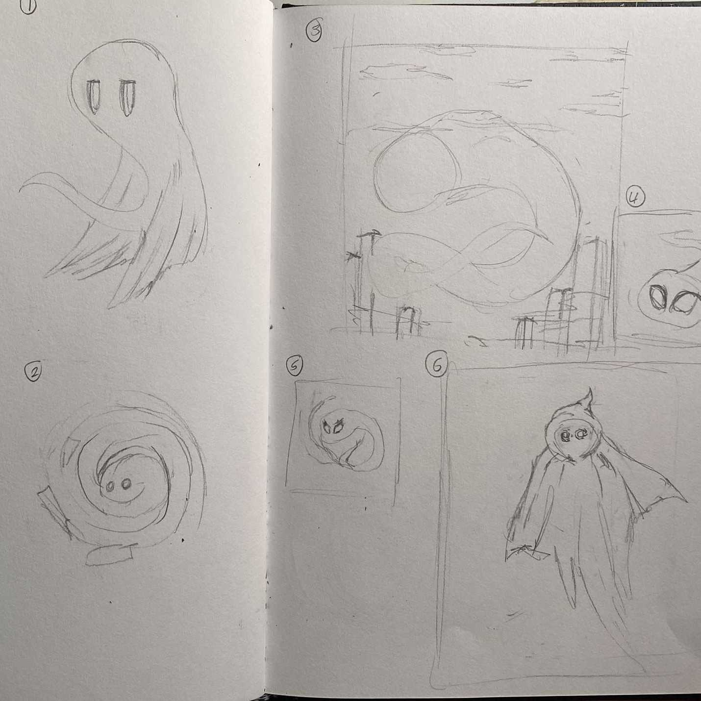
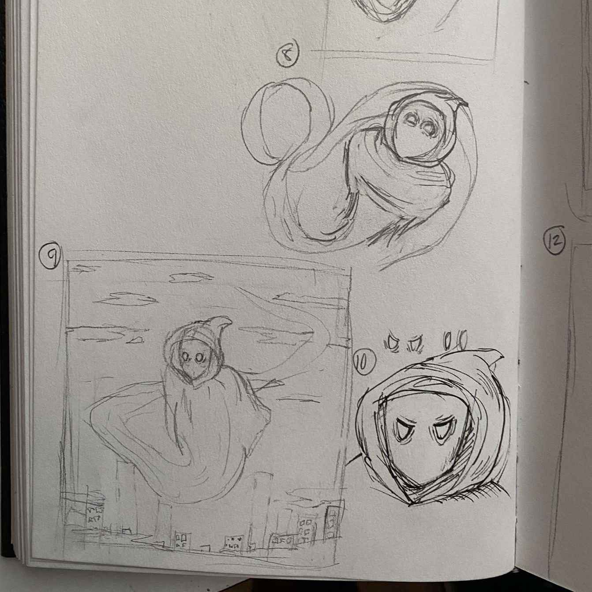
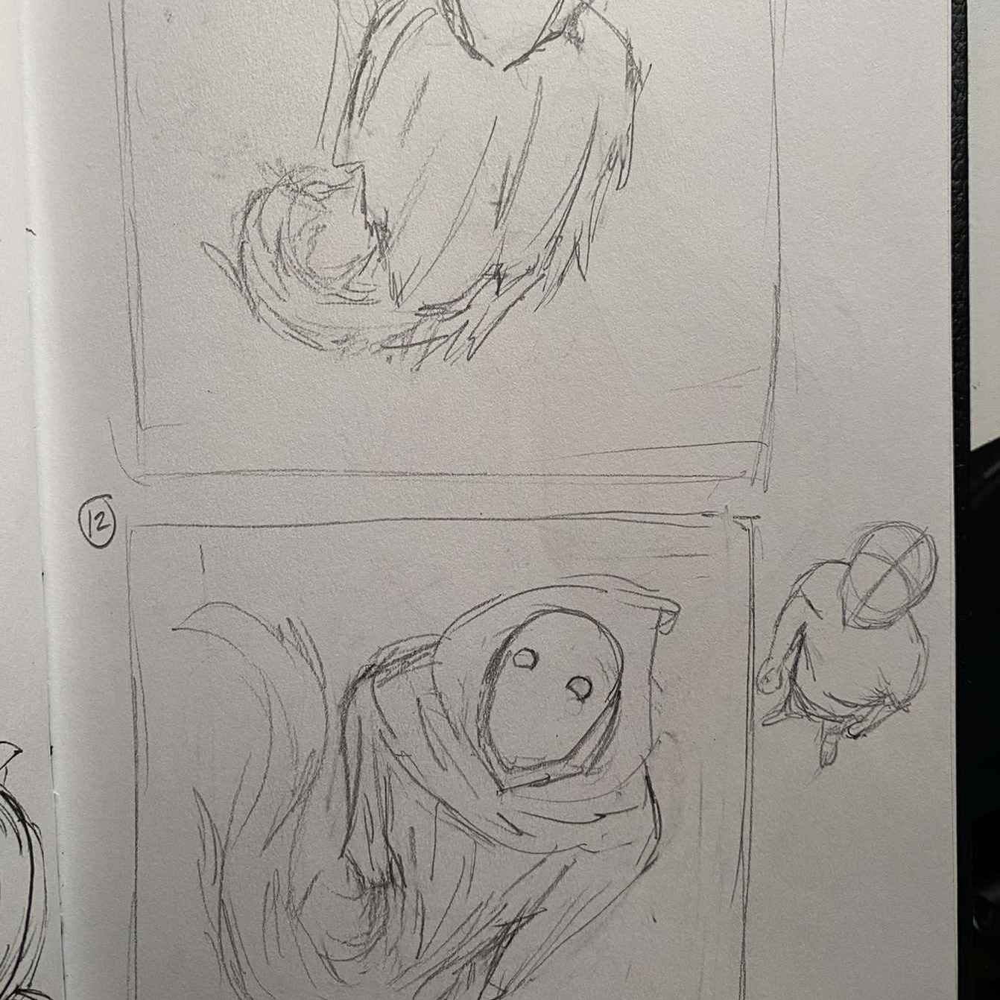
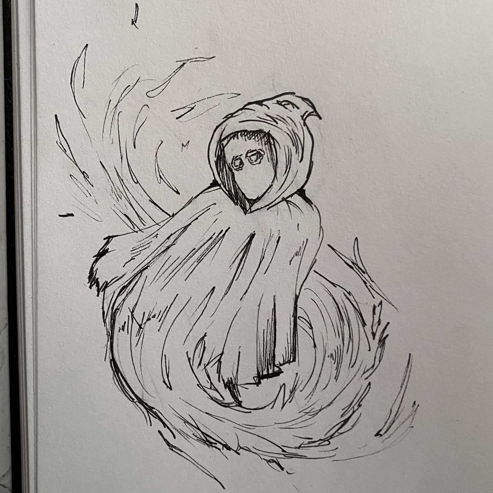
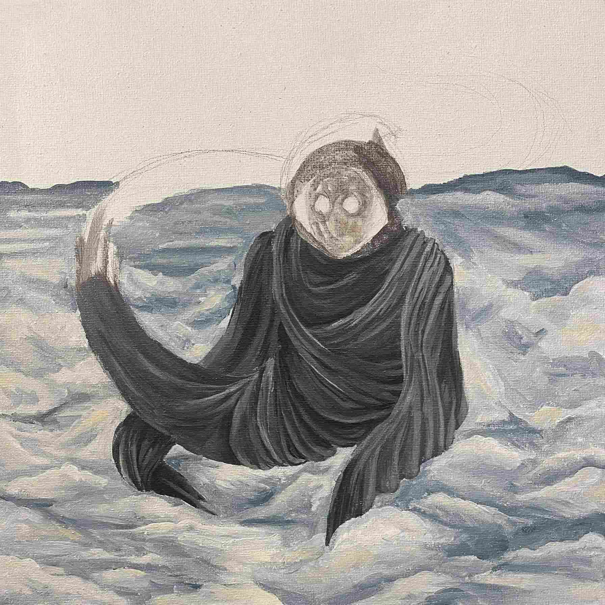

media gallery
Process Photos for The Key to Color Cover Art
All of the media shown in this section was created by and is courtesy of Hudson Leroux. The exception is the first image, which displays the original concept that I drew and sent to Hudson for reference.




